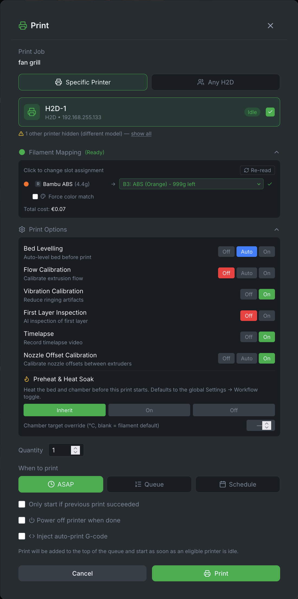
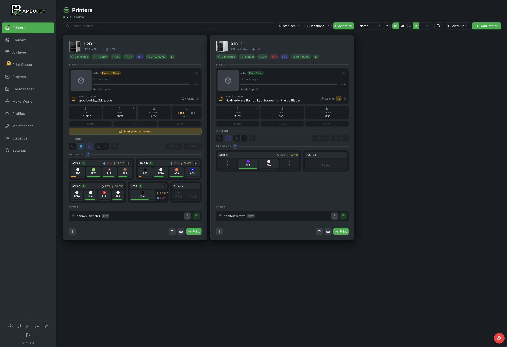
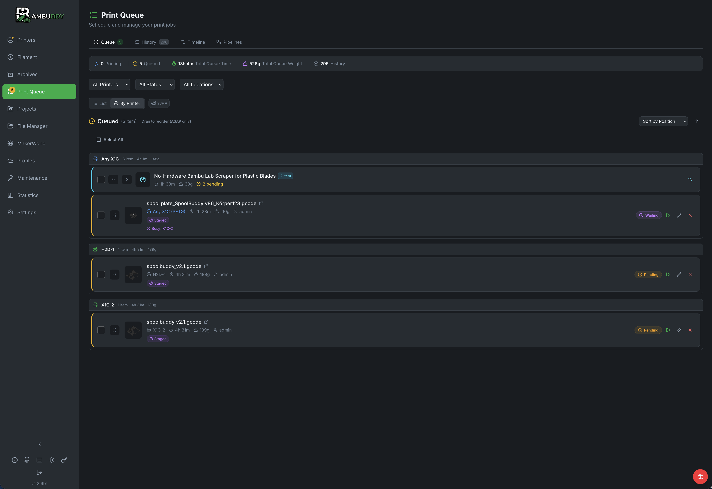
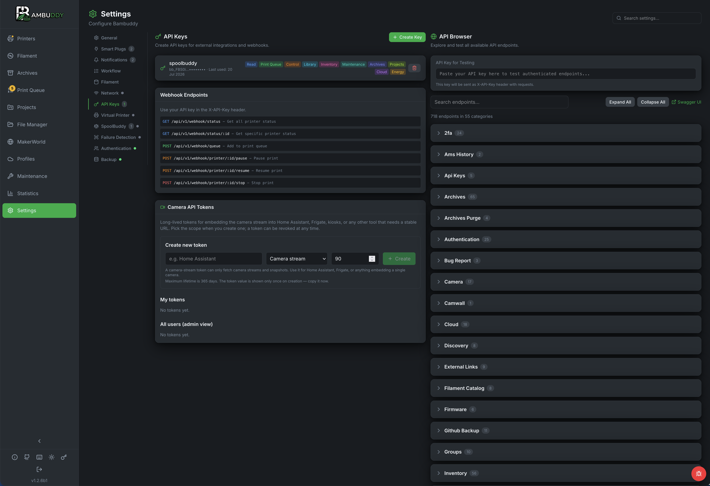

Features
Everything Bambuddy does.
Everything you need to manage your Bambu Lab printer fleet effectively.
New in 0.1.7
Virtual Printer Proxy Mode
Print from anywhere in the world. Control your Bambu Lab printer remotely without Bambu Cloud, port forwarding, or VPN.
How it works: Configure Proxy Mode in Settings → Virtual Printer. Add your Bambuddy server as a network printer in your slicer using the external IP/hostname. Bambuddy receives your print, authenticates with your local printer, and relays everything securely.
- No Port Forwarding Required
Bambuddy transparently proxies traffic between your slicer and printer. Your printer stays safely on your local network.
- Works Without VPN
Connect from anywhere with internet access. A VPN like Tailscale adds full data encryption.
- Tailscale-Aware UI
Run Tailscale on the host. Bambuddy reads the host's tailnet identity and surfaces it on each virtual-printer card with a copy button — paste the 100.x.x.x into Bambu Studio or OrcaSlicer from anywhere on your tailnet. Private mesh, encrypted, no port forwarding. Per-VP toggle on the card controls whether the IP is shown. Setup guide →
- No Bambu Cloud
Full remote printing without relying on Bambu Lab's cloud infrastructure.
- True End-to-End TLS
FTP, FileTransfer, and Camera use transparent TCP proxying with your printer's real TLS certificate. MQTT is TLS-terminated only to rewrite network addresses.
- Works with Bambu Studio & OrcaSlicer
Add Bambuddy as a network printer and send prints directly from your slicer.
- Real Printer Credentials
Uses your actual printer's serial number and access code for authentication.

New — Top Feature
Integrated Slicing
Click Slice. Print. Slice STL and 3MF files server-side — no desktop slicer install needed. The optional sidecar runs OrcaSlicer or Bambu Studio headlessly inside Docker, and one Slice button in File Manager, Archives, MakerWorld, and the print queue produces a ready-to-print .gcode.3mf that drops into the existing dispatch flow.
How it works: Bring up the optional slicer-api/ Compose stack with docker compose up -d. In Bambuddy, go to Settings → Workflow → Slicer, toggle Use Slicer API on, and paste the sidecar URL. The Slice button now appears on file cards. Click it — the modal closes immediately and a toast tracker follows the job until the sliced .gcode.3mf lands in the library, ready for the plate picker, AMS mapper, and dispatch.
- One-click Slice button everywhere
Slice from File Manager, Archives, MakerWorld imports, and the print queue. Result lands in the library with embedded thumbnail, ready for the plate picker, AMS mapper, and dispatch.
- Bambu Studio Preset Bundles (.bbscfg)
Import a Printer Preset Bundle once, then pick its curated printer + process + filament triplet from a bundle dropdown for every slice. Repeat slicing skips the JSON profile re-upload entirely.
- Slicer Pipelines — save a recipe once, apply it in one click
Capture the Slice modal's printer + process + filament + bed-type combination as a named, reusable pipeline. Apply it to any file from File Manager, Archives, or MakerWorld with one click — no re-picking the triplet. Pipelines can target a specific printer or a printer class (any X1C / any H2D), slice once and dispatch up to N copies, and fan copies out across the matching printers in parallel (spread / single-printer / first-N strategies). Live runs dashboard on the Print Queue's Pipelines tab tracks every run with colour-coded status badges, per-copy detail on expand, cancel + retry-failed buttons on in-flight runs, and a clear-log control that only deletes terminal runs.
- Per-AMS-slot filament dropdowns
Multi-color plates render one filament dropdown per AMS slot the print actually uses, each labelled
Filament N (PLA)with a colour swatch and auto-matched against your imported / cloud / standard presets by type and colour. - Multi-plate plate picker
Multi-plate 3MFs open a plate picker first; the filament list and dropdown shape adapt to the picked plate's actual usage. Per-plate filament discovery is cached so opening the modal a second time on the same plate is instant.
- Re-slice for any printer — including across nozzle classes
A 3MF authored for one printer model can be re-sliced for another — pick the target in the Slice modal and the slicer regenerates G-code for its bed, kinematics, and nozzle count. Cross-class re-slices (single-nozzle X1C / P1S / A1 / P2S onto a dual-nozzle H2D / H2D Pro and vice versa) just work too: Bambuddy detects the class change and auto-arranges objects so they land safely on the target's bed and clear the H2D's per-nozzle dead zones. MakerWorld imports authored for any printer slice cleanly on yours.
- Slice all plates at once
Multi-plate projects — parted statues, multi-part kits, calibration test stacks — get a “Slice all N plates” toggle in the Slice modal. One click produces a single
.gcode.3mfwith every plate's G-code inside, ready to send to the printer. The toast shows “Plate 2 of 5 — Generating G-code (47%)” as it works through them, and Bambuddy handles the per-plate-then-merge dance for cross-class slice-all transparently. - Background jobs with toast tracker
Long slices don't pin the modal — the job tracker follows the slice from queued to completed across pages. Library / archives lists refresh automatically when the result lands.
- Headless-friendly
Runs on a NAS, mini-PC, or RPi 5 without a desktop slicer install. Sidecar is a self-contained Docker Compose stack —
docker compose up -dand the Slice button appears in Bambuddy. - OrcaSlicer or Bambu Studio
Pick your preferred slicer in Settings → Workflow. Both ship as drop-in services with the same API surface, so you can switch any time.
- Stays opt-in
If you don't run the sidecar, all "Open in Slicer" flows continue to use the existing URI-scheme handoff to your desktop slicer, unchanged. Turning it on adds the Slice button without taking anything away.
Print Management
Comprehensive tools for organizing, archiving, and managing your 3D print files.
- Automatic 3MF Archiving
Files are automatically saved with full metadata preservation for future reference. Internal calibration prints are automatically filtered out.
- Duplicate Detection
Smart detection prevents redundant files from cluttering your archive.
- Photo Attachments
Document print results, failures, and notes with photo attachments.
- Fusion 360 Design Files
Attach F3D design files to archives for complete design tracking. Visual badge and one-click download.
- External Links
Link archives to Printables, Thingiverse, or any source URL. Globe button opens your custom link or auto-detected MakerWorld URL.
- Print with AMS Mapping & Print Options
Send any archived print to any printer from the unified Print dialog. For multi-plate 3MF files, select which plate to print with thumbnail previews. Auto-matches filaments by type and color, or manually select AMS slots from dropdown. On dual-nozzle printers (H2D/H2D Pro), filament matching is nozzle-aware — only AMS trays connected to the correct nozzle (L/R) are considered. Color names decoded from Bambu filament codes. Re-read button refreshes AMS status. Configure print options (bed leveling, flow calibration, vibration calibration, first layer inspection, timelapse) before dispatch.
- Unified Print Button & Queue-Backed Dispatch
Print button on archive cards opens the shared Print dialog for ASAP, Queue, or Schedule dispatch. Every print Bambuddy starts now flows through the queue scheduler — File Manager prints, archive reprints, printer-card upload-and-print, and scheduled queue items all share the same code path, so each print is visible on the queue page, attributable to the user that started it, deficit-checked, and cancellable from one place. No more "stealth prints" that bypass the queue.
- Multi-Plate Browsing
Browse plate thumbnails directly on archive cards. Hover to reveal navigation arrows and dots for cycling through plates in multi-plate 3MF files.
- Embedded GCode Viewer
3D-preview any archived print directly in Bambuddy — click the 3D-preview badge on an archive card to open the full-layer viewer. Multi-plate archives surface a plate picker with thumbnails; bed size auto-matches the printer the file was sliced for (H2D, X1C, P1S, A1, etc.) without any configuration.
- Metadata Preservation
Print settings, materials, and slicer configurations are stored with each file.
- Per-archive Print Log
Each archive tracks every individual print of that file. An orange
N printsbadge appears on the card whenever a model has been printed more than once; click it for the full run-by-run history with date, status, duration, filament used, cost, and failure reason. Reprints add new rows instead of overwriting the source archive's data — a 100 g successful print stays visible alongside a 10 g failed reprint, and Quick Stats correctly sum to 110 g across both events. - Global Print Log
Chronological table view of all print activity across every printer. Search and filter by printer, user, status, or date range. Colored status badges show completed, failed, stopped, cancelled, and skipped prints at a glance. Includes duration and filament info. Log data is separate from archives — clearing the log never deletes your archived files.
- Bambu Cloud Sync
Optional integration with Bambu Cloud profiles for seamless workflow.


3D Visualization
Interactive Three.js-powered model viewer for inspecting prints before sending to your printer.
- 360-Degree Rotation
Inspect models from every angle with smooth mouse controls.
- Zoom & Pan
Get detailed views of complex geometry and fine features.
- Multi-Color Preview
View multi-material prints with accurate color representation.
- Real-Time Rendering
WebGL-accelerated rendering for smooth performance on any device.
- Plate Selector
Navigate multi-plate 3MF files with thumbnail previews and object counts per plate.
- Fullscreen Mode
Expand to fullscreen with resizable split view between plates panel and 3D viewer.
Real-Time Monitoring
Keep track of your entire printer fleet with live status updates and comprehensive analytics.
- WebSocket Live Updates
Instant status changes without page refresh via persistent connections.
- HMS Error Tracking, Actions & Notifications
Monitor Health Management System errors with human-readable descriptions (853 error codes translated). One-click actions: the same Resume, Stop, Continue, Retry, Check Assistant, and Don't Remind Me buttons BambuStudio shows are rendered under each error — click and the matching MQTT command goes back to the printer, so you can clear a paused-print dialog from your phone instead of walking to the device. Action labels translated in all 11 supported locales. Clear stale errors directly from the UI after print cancellation or transient events. A red "Problem" counter in the status bar highlights printers with active HMS errors. Compact-mode status pips turn red for fatal/serious errors or amber for warnings. Progress bars turn amber when paused. Status sorting prioritizes printers with HMS errors at the top. Get instant push notifications for printer errors including AMS issues, nozzle problems, and more.
- Success Rate Analytics
Track print success rates over time to identify patterns and issues.
- Filament Consumption
Monitor material usage across all printers and prints.
- Cost Analysis
Calculate and track printing costs for materials and electricity.
- Multi-Printer Dashboard
View all your printers at a glance with unified status display.
- H2 Series Nozzle Details
Hover over nozzle cards for extended details — wear, serial number, max temp, and filament info. H2C shows a 6-slot nozzle rack card. Dual-nozzle printers show L/R details side by side with Active/Idle status.
- Resizable Printer Cards
Adjust card sizes (S/M/L/XL) from the toolbar to fit your screen and preference.
- Printer File Browser
Browse files on your printer's internal storage. Multi-select for bulk download as ZIP or delete multiple files at once.
- Bulk Printer Actions
Select multiple printer cards and apply bulk actions (stop, pause, resume, clear notifications, clear bed) from a floating toolbar. Select by state (printing, paused, finished, etc.) or by location for quick farm management.
- Search & Filters
Live search bar and filter dropdowns (status + location) make large print farms easy to navigate, especially on mobile. Search matches printer name, model, location, and serial number. The status filter is reactive to WebSocket updates — when a print finishes, the card immediately drops out of the "Printing" view.
- Maintenance Mode
Put a printer "out of service" without removing it. Toggle from the card's three-dot menu, the in-card amber banner, or the Edit Printer dialog; Bambuddy disconnects MQTT, drops the printer out of queue dispatch, the scheduler, model-based filament lookups, metrics, and notifications until you take it out again. The card stays visible on the dashboard with an amber wrench banner and an Exit button, so the printer never disappears from your mental map. Useful for parallel Bambuddy installs sharing the same hardware, printers under repair or awaiting parts, and temporary suspension.

Automation & Scheduling
Streamline your workflow with intelligent queue management and smart home integration.
- Background Print Dispatch
FTP uploads and print-start commands run in the background. Real-time progress toasts with per-job upload bars, status badges, and cancel support. UI responds immediately.
- Tabbed Queue with Multi-Drag and Gantt Timeline
Three tabs in one page: Queue for the live order (flat list or per-printer cards with aggregate count / time / weight), History for a responsive grid of past prints with filament swatch, weight, type, user, inline failure reason, and hover-to-enlarge thumbnails, and Timeline as a true Gantt swimlane — one row per printer with bars positioned by start time and sized by duration, a live NOW marker, and a rolling 24-hour window. Drag-and-drop supports multi-select: pick N items and the whole block moves together with a +N ghost.
- Multi-Printer Selection
Send prints to multiple printers at once with per-printer AMS mapping. Configure filament slots individually for each printer. Supports staggered starts directly from the Print dialog to avoid power spikes.
- Model-Based Queue Assignment
Queue prints to "any printer of matching model" (e.g., any X1C) for automatic load balancing. Optionally filter by location (e.g., "any X1C in Workshop"). Scheduler assigns to the first idle printer with the required filament types loaded. Override the sliced filament colors before scheduling — the scheduler matches against your chosen colors and prefers printers with exact matches.
- Prefer Lowest Remaining Filament
When multiple AMS spools match the same type and color, automatically select the one with the least filament remaining. Helps consume partial spools before starting new ones. Optional setting — disabled by default.
- Time-Based Scheduling
Schedule prints with a "do not start before" time, like overnight or off-peak hours. If the printer is busy at the scheduled time, the job stays queued until it can be dispatched.
- Queue Mode
Append prints to the back of the queue, or require manual start when you want to stage batches and release them yourself.
- Bulk Queue Editing
Select multiple queue items and edit printer assignment, print options, or cancel them all at once.
- Select Plates to Queue
Select any subset of plates from a multi-plate 3MF to queue at once. Each plate has a checkbox for multi-select, with a "Select All / Deselect All" toggle. Each selected plate is added as a separate queue entry, individually editable before dispatch.
- Staggered Batch Start
Stagger multi-printer starts to avoid power spikes. Available in both the Print dialog and the Queue dialog — prints sent to multiple printers are automatically queued with staggered start times. Define group size and interval — printers start in waves instead of all at once. Ideal for larger farms where simultaneous bed heating can trip breakers.
- Batch Print Quantity
Set a quantity in the Print dialog to create multiple queue items at once. ASAP batches are inserted at the top of the queue, while Queue batches append to the back unless manual start is required. Items are grouped into a batch for easy tracking.
Batch GroupingMulti-plate prints from one source 3MF auto-group into a single collapsible row with aggregate count, total time, and total filament weight. Any 2+ selected items can be grouped manually via "Group as batch"; ungroup lives on the batch parent. History batches collapse into one row with status-rollup chips (e.g. 3 OK / 1 failed). Per-batch collapse state persists across reloads.
- Smart Plug Integration
Control printer power with Tasmota, Home Assistant, MQTT, or REST/Webhook smart plugs.
- Auto Power-On
Automatically turn on printers before scheduled print jobs.
- Post-Cooldown Shutdown
Safely power off printers after prints complete and cool down.
- Clear Plate Confirmation
Require user confirmation between queued prints to ensure the build plate is cleared before the next print starts. Disable per-printer confirmations in Settings for unattended farm workflows where plates are cleared automatically.
- Shortest Job First (SJF)
Prioritize shorter prints so more jobs complete sooner. Toggle SJF on the queue page — the scheduler picks the shortest pending job for each printer instead of FIFO. A starvation guard ensures long jobs that get skipped once are protected from being skipped again.
- Configurable Default Print Options
Set default values for bed levelling, flow calibration, vibration calibration, first layer inspection, and timelapse in Settings → Workflow. Every new print dialog starts with your chosen defaults, still overridable per print.
- Auto-Print G-code Injection
Configure custom start and end G-code snippets per printer model in Settings → Workflow for bed-clearing systems like Farmloop, SwapMod, AutoClear, and Printflow 3D. Enable per queue item — the scheduler injects snippets into a temporary copy of the 3MF before uploading, leaving original files untouched.
- Preheat & Heat Soak
Heat the bed (and the chamber, on supported printers) and hold at temperature before each queued print starts — the heat-soak engineering filaments need for adhesion and warp control. Bambuddy waits between FTP upload and print start, so the soak runs while the printer is otherwise idle. Per-print Inherit / On / Off override in the Print Options panel; per-filament chamber-target map under Settings → Workflow so PA wants 50°C, ABS 45°C, PETG-CF 40°C, and PLA derives 0°C and skips the chamber phase automatically. Hardware-aware: H-series / X2D / X1E actively heat the chamber via M141; X1C / P2S use bed radiation with a chamber-sensor wait; P1S / P1P / A1 fall back to a soak timer. On H-series / X2D / P2S the cooling/heating airduct flap auto-switches to match the resolved chamber target — ABS prints get the closed-flap recirculation they need, PLA prints get the open exhaust they need. M191 (wait-for-chamber-temp) isn't honoured by Bambu firmware, so doing this at the orchestration layer is the only place it works.
- Maintenance Reminders
Set up interval-based maintenance schedules for each printer.


Multi-Platform Notifications
Stay informed about your prints wherever you are with flexible notification options.
- WhatsApp
Receive notifications directly to your WhatsApp account.
- Telegram
Get instant Telegram messages with print status updates.
- Discord
Post updates to your Discord server via webhooks.
- Email
Traditional email notifications for important events.
- Pushover & ntfy
Push notifications via Pushover or self-hosted ntfy. ntfy providers support per-event priority (Min / Low / Default / High / Urgent), so a "print failed" alert can wake the phone while a "50% complete" ping stays silent.
- Home Assistant
Persistent notifications in your HA dashboard. Forward to mobile via HA automations.
- Customizable Templates
Configure message templates with per-filament usage details, progress tracking, and quiet hours for each service. Filament data available for completed, failed, and cancelled prints.
- Print Finish Photo
Include camera snapshot URL in notifications when prints complete.
- Bed Cooled Alert
Get notified when the print bed cools below a configurable threshold after a print completes. Know exactly when it's safe to remove your parts.
- First Layer Complete Alert
Get notified with a camera snapshot when the first layer finishes printing. Check adhesion remotely without watching the entire print.
- Queue Notifications
Get notified when queue jobs are waiting for filament, skipped, or fail to start. Know immediately when action is needed.
- Missing Spool Assignment Warning
Get a toast warning and optional push notification when a print starts with AMS trays that have no spool assigned. Includes slot labels and expected material profiles.

Projects
Group related prints together and track progress on multi-part builds.
- Print Grouping
Organize related prints into projects like "Voron Build" or "Cosplay Armor".
- Plates & Parts Tracking
Separate progress bars for print jobs (plates) and objects printed (parts). Perfect for multi-part builds.
- Auto-Detect Parts Count
Automatically extracts object count from 3MF files when archiving. No manual counting needed.
- Color-Coded Badges
Visual project identification with customizable colors on archive cards.
- Bulk Assignment
Assign multiple archives to a project at once via multi-select toolbar.
- Bill of Materials
Track sourced parts with quantities, prices, and purchase links.
- File Attachments
Attach documentation, source files, configs, and reference images.
- Cost Tracking
Track expenses with configurable currency for complete project budgeting.
- Import & Export
Export projects as ZIP (with files) or JSON. Share complete project bundles or migrate between instances.
- Print Files from Project View
Printable files from linked library folders appear directly on the project detail page with a Print button. The resulting queue item and archive are automatically linked to the project — no manual assignment needed.
- URL + Cover Photo
Paste a MakerWorld / Printables / Thingiverse link and upload a hero image so each project card is immediately recognisable. The URL renders as a one-click external-link button beside the project name; the cover photo replaces the default status icon on the card with a visual identifier you can spot at a glance.


Analysis & Export
Powerful tools for analyzing print data and exporting insights.
- Full-Text Search
Instantly find any print by name, tags, notes, designer, or filament type.
- Tag Management
View, rename, and delete tags across all archives from a centralized modal with usage counts.
- Archive Comparison
Compare 2-5 prints side-by-side with highlighted differences for troubleshooting.
- Failure Analysis
Identify patterns in print failures correlated with conditions and materials.
- AI Print-Failure Detection
Hook Bambuddy up to a self-hosted Obico ML API and it will watch each print's camera feed, smooth scores over time (EWM + rolling means, same math Obico uses), and automatically notify, pause, or cut power when a failure is detected. No Obico account, no cloud — your prints, your network, your ML container.
- CSV/Excel Export
Export archives and statistics for external analysis or backup.

API & Webhooks
Extend Bambuddy with external integrations and automation tools.
- API Key Authentication
Create secure API keys with granular permissions for external access. Each key is owned by its creator; opt-in cloud-access scope lets a key read its owner's Bambu Cloud presets and filament catalogue (perfect for headless slicing pipelines).
- Webhook Endpoints
Query status, manage queue, and control printers via REST API.
- Home Assistant Compatible
Integrate with Home Assistant for smart home automation workflows.
- Granular Permissions
Control access with read-only, queue management, or full printer control permissions.
- Interactive API Browser
Explore and test all endpoints with live execution, parameter inputs, and response display.

Filament Profiles
Manage and sync filament profiles from Bambu Cloud and create custom presets.
- Bambu Cloud Sync
Import filament profiles directly from your Bambu Cloud account. Supports both email verification and TOTP authenticator apps for 2FA.
- Orca Cloud Sync
Sign in to your Orca Cloud account (the cloud OrcaSlicer 2.4.0 shipped) and pull your synced filament / process / printer profiles into Bambuddy for slicing alongside your Bambu Cloud and local presets. Four sign-in options: Google, Apple, GitHub or email + password.
- Local Profiles (OrcaSlicer Import)
Import slicer presets from OrcaSlicer without Bambu Cloud. Supports .orca_filament, .bbscfg, .bbsflmt, .zip, and .json exports with automatic inheritance resolution.
- Custom Presets
Create custom filament presets with temperature and flow settings.
- K-Profiles (Pressure Advance)
Manage K-factor profiles for optimal extrusion and print quality.
- Quick Templates
Use pre-configured templates for common filament types.


Maintenance Tracking
Keep your printers in top condition with scheduled maintenance reminders.
- Interval-Based Reminders
Set reminders based on print hours or calendar days.
- Per-Printer Tracking
Independent maintenance schedules for each printer in your fleet.
- Custom Maintenance Types
Define your own maintenance tasks with custom icons and intervals.
- Overdue Alerts
Visual indicators and notifications when maintenance is due.
- Firmware Update Helper
Check and upload firmware updates for LAN-only printers directly to SD card. Printer cards show a color-coded firmware version badge — green when up to date, orange when an update is available. The update dialog lists every version announced on Bambu's wiki with Usable/Unavailable/Installed badges per row — install intermediate versions that were skipped by the OTA channel, or roll back to an older firmware without hand-flashing files.
- Support Bundle Generator
Enable debug logging and download a comprehensive diagnostic bundle for issue reporting. Includes printer connectivity, integration status, network info, package versions, database health, and Docker details. All data privacy-filtered — no IPs, names, or serial numbers included.
- In-App Bug Reporting
Submit bug reports directly from the UI with optional screenshot (upload, paste, or drag & drop), interactive debug log capture with a 3-step guided flow (start logging, reproduce the issue at your own pace, stop & submit), and system info. Reports create GitHub issues via a secure relay. Auto-stops after 5 minutes. Privacy-first: all logs are sanitized and sensitive data is never included. Expandable data privacy notice details exactly what is collected.
- System Health
Scans recent logs against a catalog of known issues and tells you what to do about them — rejected access codes, blocked ports, flapping connections, unreachable cameras, database contention. Each finding is labelled "you can fix this" or "please report this" and links straight to the fix. Shown on the System page and inline in the bug reporter, so most setup mistakes get self-resolved without a support round-trip. The Add-Printer dialog runs the same connection checks on save and warns before adding a printer that would show offline.


Additional Capabilities
More features to enhance your 3D printing experience.
- MakerWorld Integration
Paste any MakerWorld model URL and save or slice the 3MF without leaving Bambuddy. Per-plate picker with Save or Save & Slice in Bambu Studio / OrcaSlicer, Import all plates for multi-plate models, folder picker, image gallery with keyboard-navigable lightbox, Recent imports sidebar, and per-plate delete with confirm modal. Reuses your existing Bambu Cloud login — no separate account, no companion browser extension, no cookie paste. MakerWorld HTML descriptions are sanitised via DOMPurify and CDN images are proxied through Bambuddy so your IP stays private. Closes the last workflow gap for LAN-only users who kept the Bambu Handy app around just for MakerWorld downloads.
- Library Trash Bin & Admin Bulk Purge
Deleted library files move to a trash bin with a configurable retention window (default 30 days) before a background sweeper permanently removes them — an undo window for accidental deletions. Regular users see and manage their own trashed files; admins see everyone's, can restore or delete permanently, and tune retention inline on the Trash page. For libraries that have grown into gigabytes, admins also get a Purge old bulk action with a live preview (count + total size freed + sample filenames) that moves every file older than N days into the trash in one shot, with an opt-in checkbox for never-printed files. Optional Auto-purge in Settings runs the same operation automatically once per 24 hours on an opt-in schedule, so admins never have to remember to clean up. Gated by a new library:purge permission (admin-only by default, delegable to other roles). External (linked) files bypass trash since their bytes aren't under Bambuddy's control.
- Archive Auto-Purge
Print archives can grow into tens of gigabytes over time — Settings → Archives now has an auto-purge toggle that hard-deletes archives older than a configurable age (default 365 days, minimum 7). A manual Purge archives now button opens a modal with a live preview (count + size) before you confirm. Unlike the library trash, archives are hard-deleted — print history is a decaying timeline, so there is no trash intermediate; the delete goes through the same safety-checked path as the single-archive delete button, cleaning up the 3MF, thumbnail, timelapse, source 3MF, F3D, and photo folder together with the DB row. Off by default; admin-only (reuses the existing archives:delete_all permission).
- Spool Inventory
Built-in spool tracking with AMS slot assignment, remaining weight editing, spool catalog, color catalog, and PA profile matching. Bulk spool addition (1–100 at once) with Quick Add mode for stock spools — material is required, brand and subtype are optional. Group similar spools toggle visually collapses identical unused/unassigned spools into expandable rows with a count badge. Automatic usage tracking via 3MF slicer data for all spools, with per-layer G-code accuracy for partial prints. Universal AMS mapping capture from any print source (BambuStudio, OrcaSlicer, Bambu Handy, or Bambuddy). AMS remain% delta as fallback. Mid-print spool reassignment support (uses live assignment if changed during print). Manual AMS weight sync for recovery from corrupted data. Per-spool cost tracking with automatic cost calculation at print completion, real-time cost preview in the print modal, and configurable default cost and currency. Multi-colour gradients, transparency, and visual effects — paste a comma-separated hex list (e.g. from 3dfilamentprofiles.com) to render a spool as a gradient strip or a colour-wheel pie (Multicolor subtype); alpha < FF shows through a checkerboard so transparency is visible; optional effect overlay (Sparkle, Wood, Marble, Glow, Matte). Same fields are editable on the colour catalog so combos can be saved once and reused.
- Printable Spool Labels
Generate PDF labels for any selection of spools in four pre-built sizes: AMS holder (30×15 mm) for the popular Makerworld AMS Filament Label Holder, single box label (62×29 mm) for Brother PT/QL or Dymo small labels, Avery L7160 sheets (A4, 21 per page), and Avery 5160 sheets (US Letter, 30 per page). Each label carries the colour swatch (with multi-colour gradient stripes for spools that have extra colours), brand, material, the spool's own name, the spool ID (the killer field for telling 8 spools of "PLA White" apart in your closet, especially partials), and a QR code that deep-links straight back to that spool's row in Bambuddy when scanned with a phone. Pick from the inventory page — search, filter by material, multi-select spools, then print or save the PDF from your browser. Server-side rendering via ReportLab + qrcode (pure Python, no headless browser, no system libs).
- Spoolman Integration
Auto-sync AMS with Spoolman. Per-filament usage tracking with G-code parsing, partial usage for failed prints, link existing spools, view spool IDs. AMS Lite and external spools show fill levels from Spoolman weight data.
- MQTT Publishing
Publish printer events to external MQTT brokers for Home Assistant, Node-RED, and other automation platforms.
- Prometheus Metrics
Export printer telemetry in Prometheus format for Grafana dashboards and external monitoring systems.
- K-Profile Support
Manage pressure advance (K-factor) profiles for optimal print quality.
- GitHub Profile Backup
Schedule automatic backups of K-profiles, cloud profiles, settings, spool inventory, and print history to a GitHub repository.
- Multi-Language Support
Available in English, German, and Japanese, with more languages coming.
- Configurable Slicer Preference
Choose between Bambu Studio and OrcaSlicer as your preferred slicer. All "Open in Slicer" buttons use the correct protocol.
- Server-Side Slicing (optional sidecar)
Slice STL and 3MF files without a desktop slicer installed. Bring up the optional
slicer-api/Compose stack (OrcaSlicer and/or Bambu Studio CLI behind an HTTP wrapper), turn on Use Slicer API in Settings → Workflow, and the Slice button in File Manager, Archives, and MakerWorld dispatches a background slice job whose result lands as a new.gcode.3mfwith embedded thumbnail. Multi-plate 3MFs open a plate picker first; multi-color plates render one filament dropdown per AMS slot the print actually uses, each pre-picked against your imported / cloud / standard presets by type and colour match. The picked printer is not tied to the printer the source 3MF was authored for — a model sliced for an X1C re-slices cleanly onto an H2D (or any other model), so MakerWorld imports work whatever printer the creator used. NEW — Bambu Studio Preset Bundles: import a.bbscfgexported from Bambu Studio (File → Export → Export Preset Bundle) once, then pick its curated printer + process + filament triplet from a new bundle dropdown in the Slice modal. Repeat slicing skips the JSON profile re-upload entirely — the sidecar materialises the triplet from the stored bundle by name. For unsliced project files Bambuddy runs a fast preview-slice via the sidecar to discover the canonical filament list (cached per plate, instant on repeat opens). Toast tracker follows the job from queued to completed across pages so a long slice never pins the modal. Falls back to embedded settings on 3MF inputs when the CLI's--load-settingspath misbehaves. Bambu Studio is recommended — OrcaSlicer 2.3.2 / 2.4.0-dev have known CLI bugs that block slicing many Bambu-authored 3MFs; Bambu Studio is a drop-in replacement until the upstream fixes land. Stays opt-in — if you don't run the sidecar, the existing "open in desktop slicer" flow is unchanged. - Admin Default Menu Order
Admins can set a default sidebar navigation order and visibility for all users. Users who haven't customized their sidebar automatically inherit the admin-set layout. Toggle on from Settings to apply your current menu order as the default.
- Customizable Themes
Mix and match styles (Classic, Glow, Vibrant), backgrounds, and accent colors for both dark and light modes.
- MQTT & FTPS Communication
Secure, encrypted communication with your printers over LAN. Requires SD card inserted in printer for file transfers.
- Open Source
AGPL-3.0 licensed - inspect, modify, and contribute to the codebase.


Smart Plug Control
Control printer power with Tasmota, Home Assistant, MQTT, or REST/Webhook smart plugs for energy monitoring and automation.
- Energy Monitoring
Track power consumption and electricity costs in real-time.
- MQTT Energy Monitoring
Subscribe to MQTT topics from Zigbee2MQTT, Shelly, or any MQTT-enabled device. Supports separate topics per data type with individual multipliers.
- HA Energy Sensors
Configure separate power/energy sensor entities for Home Assistant plugs (Tapo, IKEA, Shelly, etc.).
- HA Script Support
Control multiple devices together (printer + fan) using Home Assistant scripts with auto-trigger on power on/off.
- REST/Webhook Support
Control any HTTP-controllable device with custom URLs, methods (GET/POST/PUT/PATCH), request bodies, and headers. Works with openHAB, ioBroker, FHEM, Node-RED, and more.
- Auto Power Control
Automatically turn printers on before scheduled prints and off after cooldown. One-shot (default) or persistent auto-off for accessories that should always power down between prints.
- Auto Off After AMS Drying
Cut power to the printer and AMS automatically after a filament drying cycle completes — works for queue-triggered, ambient, or manually-started drying. Independent of the print-finish auto-off, with its own cooldown delay (default 10 minutes) since the AMS chamber stays warm longer than the hotend after a dry cycle.
- Manual Override
One-click power on/off buttons for immediate control.
- Temperature-Based Shutoff
Wait for hotend to cool below threshold before powering off.
- Easy Setup
Scan for Tasmota devices, select from your Home Assistant entities, or configure REST/Webhook endpoints for any HTTP-controllable device.
- Switchbar Quick Access
Control smart plugs from anywhere in the app with the sidebar switchbar widget.


Virtual Printer
Send prints directly from Bambu Studio or Orca Slicer to Bambuddy without needing a physical printer connection. Create multiple virtual printers, each with its own dedicated IP, mode, and printer model.
🌍 New: Proxy Mode — Print from anywhere in the world without VPN or port forwarding. Learn more ↑
🪞 New: Live Target-Printer Mirror — Non-proxy modes (Immediate / Review / Queue) now mirror their target printer's live state to the slicer: AMS slot contents, FTS / dual-extruder routing, k-profile lookup, AMS load / dry / calibration commands, and the camera stream. Use the slicer as a full remote for the printer behind the VP without giving up Bambuddy's queue / archive / dispatch features.
- Automatic Discovery
Virtual printer appears in slicer via SSDP discovery on the same LAN. Network interface override for multi-NIC, Docker, or VPN setups. Remote users add by IP.
- Four Flexible Modes
Archive immediately, review before archiving, add to print queue (with optional auto-dispatch, manual start, or force-color-match so the scheduler refuses to dispatch onto a printer with the wrong filament loaded), or proxy to a real printer remotely. In Immediate / Review / Queue modes the slicer also gets a live read of the target printer's AMS / nozzle / camera state.
- Configurable Printer Model
Choose which Bambu printer model to emulate: X1C, P1S, P2S, X2D, A1, A2L, H2D, H2C, and more.
- Secure Communication
TLS-encrypted MQTT with auto-generated certificates and configurable access code.
- Multiple Virtual Printers
Run multiple virtual printers on a single Bambuddy instance, each with its own dedicated IP, mode, model, and access code. Mix archive, review, queue, and proxy modes.
- No Physical Printer Required
Perfect for archiving prints, building a queue, or preparing for print farm operations.

Statistics Dashboard
Comprehensive analytics with customizable widgets to track your printing activity.
- Customizable Layout
Drag and drop widgets to arrange your dashboard how you like.
- Success Rate Tracking
Monitor print success rates over time with trend analysis.
- Filament Usage Charts
Visualize material consumption by type, color, and time period.
- Cost Analysis
Track material and electricity costs with detailed breakdowns. Per-spool cost/kg enables accurate filament cost tracking for every print, with archive-level cost aggregation and bulk recalculation.
- Recalculate Costs
Update all archive costs with current filament prices. Reprints automatically add to total costs.
- Per-User Statistics
Filter all statistics by user to track individual usage, costs, and print activity. Ideal for universities and makerspaces. Requires the
stats:filter_by_userpermission (Administrators only by default).
Camera Streaming
Watch your prints in real-time with built-in camera streaming support.
- MJPEG Stream
Direct camera feed from your printer's built-in camera.
- External Cameras
Connect external cameras (MJPEG, RTSP, HTTP snapshot, or USB webcams) to replace the built-in camera. Includes layer-based timelapse with automatic video stitching.
- Build Plate Empty Detection
Automatically detect if objects are left on the build plate before printing. Calibrate with up to 5 reference images for different plate types, adjust the detection region (ROI), and receive instant notifications if a print is paused due to plate detection. Works with both built-in and external cameras.
- Flexible View Modes
Choose to open camera in a new browser window or as a draggable, resizable overlay on the main screen. Position and size are remembered across sessions.
- Zoom & Pan
Zoom up to 400% with mouse wheel or buttons, then pan to inspect details. Touch support includes pinch-to-zoom and drag to pan on mobile devices.
- Multi-Viewer Fan-Out
Most Bambu printers only allow one upstream camera connection. Bambuddy fans out a single shared stream to N viewers — open the same printer in two tabs, two devices, OBS, and a kiosk all at once without one viewer kicking another off.
- Long-Lived Camera Tokens for HA / Frigate / Kiosks
Mint a camera-only token from Settings → API Keys, paste it into a Home Assistant card / Frigate config / kiosk URL once and forget. Hard 365-day cap, hashed at rest, scoped to the camera stream only, revocable at any time. No more refreshing 60-minute browser tokens on a cron just to keep your dashboard alive.
- Multi-Printer View
Open multiple embedded camera viewers simultaneously to monitor your entire print farm on a single screen. Each viewer remembers its own position and size, and cameras stay open when navigating between pages.
- Cam Wall View
Toggle the Printers page from cards into a responsive grid of camera tiles for at-a-glance monitoring across the whole farm. On-screen tiles stream live up to a configurable cap (default 4) so Raspberry Pi installs stay sustainable; the rest fall back to periodic snapshot polling, and off-screen tiles pause entirely. An optional status overlay paints the printer state (Printing / Paused / Finished / Error) on each tile, plus progress, layer, and time-left on whichever tiles are actively printing. Click any tile to open the floating viewer or a dedicated window — Cam Wall respects your existing camera view preference.
- Local Network Only
Streams stay on your local network - no cloud exposure.
- Timelapse Editor
Printer timelapses are automatically detected and attached to archives. Supports MP4 (X1/A1 series) and AVI (P1 series) formats with automatic background conversion. Manually upload or remove timelapses via the context menu. Edit with trim, speed adjustment (0.25x-4x), and music overlay.
- Streaming Overlay for OBS
Embeddable overlay page at
/overlay/:printerIdfor live streaming. Combines camera feed with real-time print status (progress, ETA, layers, filename). No login required - perfect for OBS browser source. Customizable via query parameters: adjustable FPS (?fps=30), status-only mode without camera (?camera=false), size, and selectable elements.


AMS & Humidity Monitoring
Keep track of your Automatic Material System status and filament conditions.
- Real-Time Humidity
Monitor humidity levels inside each AMS unit to protect hygroscopic filaments.
- Temperature Tracking
View temperature readings from AMS-HT units for heated drying.
- Remote AMS Drying
Start, monitor, and stop drying sessions for AMS 2 Pro and AMS-HT directly from the Printers page. Select filament type for automatic temperature/duration presets, or set manually. Optional spool rotation for even heat distribution — the toggle is disabled per-AMS when any tray has filament threaded into the feed tube (the AMS mechanism is locked there; rotating would jam the filament). Real-time countdown shows drying progress. Requires supported printer firmware and external PSU. Bambuddy automatically detects power constraints from firmware — the drying button is disabled with a tooltip when no PSU is connected. AMS power-related HMS errors (fan failures, voltage issues) are shown in the HMS error panel.
- Queue Auto-Drying
Automatically dry AMS filament between scheduled prints. When a printer is idle and humidity exceeds the configured threshold, Bambuddy starts a drying session using the lowest safe temperature across loaded filaments. Each drying cycle runs for the configured duration and stops when it completes, when the next print is ready to start, or when auto-drying is disabled. Optional blocking mode waits for drying to complete before starting the next print.
- Ambient Drying
Keep filament dry on idle printers even without any queued prints. When enabled, Bambuddy monitors humidity and automatically starts a drying session whenever the threshold is exceeded, regardless of queue state. A separate toggle in Settings → Print Queue, independent from queue auto-drying.
- Continue Drying While Printing
On capable Bambu hardware (H2D 01.03.00.00+, H2C / H2S / P2S / H2D Pro 01.02.00.00+, X2D / A2L 01.01.00.00+, X1C 01.11.02.00+), auto-drying can keep running during a print — rather than stopping the moment a print starts. Off by default; opt-in toggle in Settings → Print Queue. The drying temperature is automatically capped 5°C below the idle preset (floor 40°C) to protect spools from the hot enclosure during a print, matching Bambu's own "lower drying temperature during printing" guidance. P1 series, A1, A1 Mini, X1 (non-C), and X1E are excluded — their firmware does not support concurrent drying during a print.
- Configurable Drying Presets
Customize drying temperature and duration for each filament type (PLA, PETG, TPU, ABS, ASA, PA, PC, PVA) with separate values for AMS 2 Pro and AMS-HT. Presets are used by manual drying, queue auto-drying, and ambient drying. Defaults based on BambuStudio's official filament profiles.
- Per-Filament Humidity Threshold
Set a different humidity trigger per filament type instead of one global value — e.g. Nylon at 20%, PLA at 60%, ASA at 30%. Mixed-material AMS units use the most-restrictive threshold across the loaded spools, so a single PLA + Nylon unit triggers at Nylon's level. Drives both the auto-drying scheduler and the hourly humidity alarm in lockstep. Configured in Settings → Workflow → Auto-Drying, alongside the drying presets.
- Slot Status
See which filament slots are loaded and their current states.
- Load & Unload from the Printer Card
Hover any AMS slot or external spool, click the menu button, and load that tray or unload the currently-loaded one — no walk to the touchscreen. On dual-extruder H2D, Ext-L and Ext-R drive their respective nozzles independently. Hidden while the printer is running. Requires the same control permission as start/stop/pause.
- AMS Filament Backup Modal & Backup-Aware Deficit Check
Mirrors BambuStudio's per-printer AMS Filament Backup setting — when a spool runs out, the printer auto-switches to a same-preset, same-colour spool in another slot so a long print can roll across multiple spools. A small badge in the Filaments section header on each printer card shows the live state (blue circular-arrow icon = ON, dim = OFF, "?" = A1 family with no
cfgfield); click to open a BambuStudio Auto Refill-style modal with one filament-coloured ring per backup pair — slot labels distributed around the colour band, material name and rotation count in the centre. Dual-extruder printers (H2D / H2C / X2D) carry an R / L badge per ring because the firmware can't cross extruders. Bambuddy's "insufficient filament" check is backup-aware: when Backup is ON, the deficit check pools remaining grams across same-(preset, colour)spools on the printer, so the warning doesn't fire spuriously when the firmware will swap to a peer mid-print. State syncs in real time whether the change came from Bambuddy, BambuStudio, or the printer's touchscreen. The companion Prefer Lowest Remaining Filament setting respects the backup toggle — when Backup is OFF, Bambuddy suppresses the prefer-lowest sort so the dispatcher won't reach for a near-empty spool the printer can't roll off of (#1762, #1766). - Configure AMS Slots
Configure individual AMS slots with filament presets, colors, and K-profiles. Presets are filtered by printer model so only compatible filaments are shown. Re-configuring an already-configured slot pre-populates all fields (preset, color, K-profile) for quick edits.
- Multi-AMS Support
Monitor up to 4 AMS units per printer with unified display.
- Nozzle-Aware Filament Mapping
On dual-nozzle printers (H2D/H2D Pro), AMS filament matching respects nozzle assignments from the 3MF file. Each AMS unit feeds a specific nozzle (left or right), and Bambuddy constrains matching accordingly. L/R badges shown in the filament mapping UI.
- Filament Track Switch (FTS) Support
Bambuddy detects the Filament Track Switch accessory on dual-nozzle printers and adjusts the print modal accordingly. With the FTS installed the AMS is no longer wired to a fixed extruder — the FTS routes any slot to either nozzle on demand — so the per-nozzle filter is suppressed and every loaded slot is selectable. Slots currently fed into a track get an L/R badge so you can see at a glance where the FTS is routing them.
- Dual External Spool Support
Printers with multiple external spool holders (e.g., H2D with Ext-L and Ext-R) are fully supported. The external spool section renders as a grid layout accommodating multiple external slots instead of a single slot, with each slot independently configurable and trackable.
- AMS Info Card & Custom Labels
Hover over any AMS label to see its serial number and firmware version. Assign custom friendly names (e.g. "Silk Colours", "Workshop AMS") that persist even when the AMS is moved to a different printer. Slot numbers are displayed inside each filament color circle for quick identification.

Printer Control
Fine-tune your prints with real-time control over printer settings. The printer card was redesigned in 0.2.5b2 with a tighter layout and popovers for all controls (temperature setpoints, fan speeds, jog).
- Print from Printer Card
Click the Print button or drag-and-drop a .gcode/.gcode.3mf file onto any printer card to upload and print in one step. The printer is pre-selected with filament mapping and print options ready to go.
- Printer Information Modal
View detailed printer info from the card menu — model, IP address, serial number, WiFi signal, firmware, developer mode, print hours, and more. IP and serial are copyable with one click.
- Fan Status & Speed Control
Monitor part cooling, auxiliary, and chamber fan speeds with live WebSocket updates — and click any fan badge to set the speed directly (0-100%, with Off + three user-configurable quick presets and a custom value input).
- Temperature Setpoints (Nozzle / Bed / Chamber)
Click any temperature card on the printer card to set the target — nozzle (0-320 °C, per-extruder on dual-nozzle H2D), bed (0-140 °C), and chamber (0-60 °C, only on H2C / H2D / H2D Pro / H2S / X2D with an active chamber heater; sensor-only models keep the card read-only). Quick-select buttons plus a custom value input; the Off button is always present.
- Heater History Charts
Each heater tile (nozzle, bed, chamber) carries a small chart icon in the top-right corner. Single-click the tile body to open the existing temperature setpoint popover; click the icon to open a per-heater history modal with current / average / min / max stats, a target overlay, and a 6h / 24h / 48h / 7d time range selector. Bambuddy records readings every 60 seconds (retention configurable, default 30 days), so the read-only X1C and P2S chamber sensors finally have a useful click action too. Mirrors the existing AMS humidity / temperature history surface.
- Customizable Temperature & Fan Presets
Three quick-select values per category (nozzle / bed / chamber / fan speed) are user-configurable under Settings → Workflow → Temperature & Fan Presets. The fixed Off button is always shown. Empty stored value falls back to the built-in defaults.
- Stop & Pause/Resume
Control active prints with stop and pause/resume buttons directly from the printer card. Confirmation modals prevent accidental clicks.
- AMS RFID Re-read
Re-read RFID data for individual AMS slots to refresh filament information. Loading indicator shows progress.
- Skip Objects
Skip individual objects during a print without stopping the entire job. Preview image shows object ID markers to match with printer display. Badge shows skipped count. Requires "Exclude Objects" enabled in slicer.
- Quick Print Speed Control
Change print speed presets directly from the printer card during active prints. Choose between Silent (50%), Standard (100%), Sport (124%), and Ludicrous (166%) modes. Appears as a compact badge with a gauge icon next to the fan status badges for quick access without opening menus.
- Chamber Light Control
Toggle the chamber LED on/off directly from the printer card. Light button next to camera button with visual indicator showing current state. Works on all Bambu Lab printers including H2D dual lights.
- Airduct Mode (P2S / X2D / H2*)
Switch between Cooling (PLA/PETG/TPU) and Heating (ABS/ASA/PC/PA) modes from a one-click badge next to the speed control. Snowflake / flame icons make the active mode obvious at a glance.
- Jog Controls (Z / XY / Extruder)
One popover, three axes. Z-Jog moves the build plate (1 / 10 / 50 mm steps) with a Bambu Studio-style not-homed warning offering Home Z, Move anyway (bypasses soft endstops), or Cancel. XY-Jog moves the toolhead by a relative X/Y distance (±200 mm per axis). Extruder Jog manually extrudes or retracts filament (±100 mm) for purging or load verification — Bambu firmware enforces cold-extrude refusal client-side guards aren't needed.
- SD Card & Door Status Badges
At-a-glance icon badges in the top status row: SD Card turns red when the card is missing; Enclosure Door turns yellow when open (X1/P1S/P2S/X2D/H2*). Updates live via WebSocket so you spot a forgotten open door before the next print starts.
- Force Refresh
Re-request a full status snapshot from the printer (MQTT
pushall) without forcing a reconnect. Available from the printer card kebab menu. - AI Detection Toggle
Enable or disable spaghetti detection and first layer inspection.
- Clear HMS Errors
Dismiss stale HMS errors directly from the error modal. Sends a clear command to the printer and updates the UI instantly. Useful after print cancellation or transient events that leave error codes behind.
Energy Tracking
Monitor electricity consumption and calculate true printing costs.
- Real-Time Power Draw
See current wattage consumption via smart plugs with energy monitoring.
- Per-Print Energy Cost
Calculate electricity cost for each print based on your utility rate.
- Historical Usage by Period
View energy consumption for today, this week, this month, or any custom date range. Powered by hourly lifetime-counter snapshots so even "Total Consumption" mode supports accurate date ranges.
- Restart-Resilient Per-Print Tracking
If Bambuddy restarts during an active print, the per-print energy delta is still computed correctly at completion — the starting counter is persisted on the archive row.
- Custom Electricity Rate
Set your local electricity price for accurate cost calculations.
Backup & Restore
Protect your data with easy backup and restore functionality.
- Complete ZIP Backup
Single ZIP file contains database, archives, thumbnails, timelapses, library files, and all settings.
- One-Click Restore
Upload backup ZIP to restore everything including all files and thumbnails.
- Portable Backups
Backups work across different servers, paths, and Docker volumes without path issues.
- Complete by Definition
No data can be missed - the entire database and all directories are included automatically.
- GitHub Cloud Backup
Scheduled automatic backups of K-profiles, cloud profiles, settings, spool inventory, and print archive history to a private GitHub repository.
- Scheduled Local Backups
Automatic local backup snapshots on an hourly, daily, or weekly schedule with configurable retention. ZIP files can be mounted to a NAS via Docker volume, and each snapshot can be downloaded, restored, or deleted from the UI.

Optional Authentication
Secure your Bambuddy instance with user authentication when needed.
- Fully Optional
Enable or disable authentication at any time. Existing installations work without authentication by default.
- Group-Based Permissions
80+ granular permissions with customizable groups and a full-page editor with search, bulk actions, and category-level toggles. Default groups: Administrators (full access), Operators (own items + control), Viewers (read-only). Fine-grained inventory permissions let you control who sees spool assignments on printer cards vs. the full inventory page.
- Ownership-Based Access
Operators can only edit/delete their own archives, queue items, and library files. Administrators can modify any item.
- User Management
Create, edit, and delete users. Assign users to multiple groups for additive permissions.
- JWT Authentication
Secure token-based authentication with 7-day expiration. Passwords are securely hashed using PBKDF2.
- User Activity Tracking
Track who uploaded archives, library files, and who added print jobs to the queue. See usernames on archive cards, file cards, queue items, and while printing. Each user gets their own independent Bambu Cloud login for cloud profiles.
- Advanced Auth via Email
Configure SMTP for automated user onboarding. Admins create users with an email address and the system sends a secure random password automatically — no shared passwords.
- Self-Service Password Reset
Users can reset their own password from the login screen without contacting an admin. Admins can also trigger one-click password resets from user management.
- LDAP / Active Directory
Authenticate users against your existing LDAP or Active Directory server. Supports LDAPS and StartTLS encryption, auto-provisioning on first login (or manual provisioning via an admin-side directory search), and LDAP group-to-BamBuddy group mapping for automatic role assignment. Local admin accounts remain as fallback.
- Two-Factor Authentication (TOTP + Email OTP)
Per-user opt-in 2FA with TOTP (Google Authenticator, Authy, 2FAS, or any standard TOTP app) or a 6-digit code delivered by email. Each user gets 10 single-use backup codes, printable or savable in a password manager. Hardened against brute-force (per-user and per-IP rate limits), replay (a TOTP code cannot be accepted twice in the same 30-second window, including across setup, verify, disable, and backup-code regeneration), and token reuse (the pre-auth challenge is a single-use DB-backed token bound to the browser via an HttpOnly cookie).
- Single Sign-On (OIDC / SSO)
Log in to BamBuddy via any standards-compliant OIDC provider — PocketID, Authentik, Keycloak, Google Workspace, Azure AD — with PKCE (S256) for public clients. BamBuddy validates the issuer,
aud,nonce, andemail_verifiedclaims on every callback, and the admin UI can opt-in to auto-provisioning of new BamBuddy users or auto-linking to existing accounts via their verified email address. Every URL pulled from the OIDC discovery document is validated against private/loopback/link-local IPs to prevent SSRF; non-HTTPS issuer URLs are rejected outright. - Email Templates
Customizable notification templates for welcome emails and password resets. Advanced auth can be enabled or disabled independently at any time.
- Per-User Email Notifications
Individual users can receive email notifications for their own print jobs — start, complete, failed, and stopped events — with per-user toggle controls on a dedicated Notifications page.

File Manager
Browse and manage your local library of 3MF files and sliced prints.
- Browse Library Files
Navigate folders, view files, and organize your local print library.
- External Folder Mounting
Mount host directories (NAS, USB, network shares) into the File Manager. Files are accessed directly from the original path—nothing is copied.
- Unified Print Action
Print library files through the shared Print dialog with full options: plate selection for multi-plate 3MF, AMS mapping, scheduler timing, and all print settings.
- Queue-Backed Dispatch
All file prints go through the scheduler-backed queue. Archives are created automatically when prints start, so library files do not need archive copies upfront.
- Link to Projects
Organize folders by linking them to projects or archives for easy reference.
- Multi-Select Operations
Select multiple files for batch operations like deleting or queueing.
- Rename Files & Folders
Rename files and folders directly via context menu or inline actions.
- ZIP File Support
Upload ZIP files to automatically extract contents with options to preserve folder structure or create folder from ZIP filename.
- STL Thumbnail Generation
Auto-generate preview thumbnails for STL files on upload, or batch generate for existing files via context menu.
- Mobile-Friendly
Touch-optimized interface with always-visible action buttons on mobile and tablets.
System Info
Monitor your Bambuddy installation health and system resources.
- Version Information
View current Bambuddy version and check for updates.
- Database Stats
Monitor database size and number of archived prints.
- Storage Usage
See how much disk space your archives consume.
- Connection Status
Real-time status of all printer MQTT connections.
- Live Log Viewer
Stream and filter application logs in real-time. Filter by level (DEBUG/INFO/WARNING/ERROR) or search text.
Mobile Access (PWA)
Access Bambuddy from any device with Progressive Web App support.
Set up Bambuddy in minutes and take control of your print fleet.
Already using Bambuddy? Help keep it independent →
- Install as App
Add Bambuddy to your home screen for native app-like experience.
- Responsive Design
Full functionality on phones, tablets, and desktops.
- Touch-Optimized
Large touch targets and swipe gestures for mobile users.
- Works Offline
Basic functionality available even without network connection.
Ready to get started?
The live demo runs the real application against simulated printers — nothing to install, nothing to uninstall afterwards.